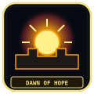
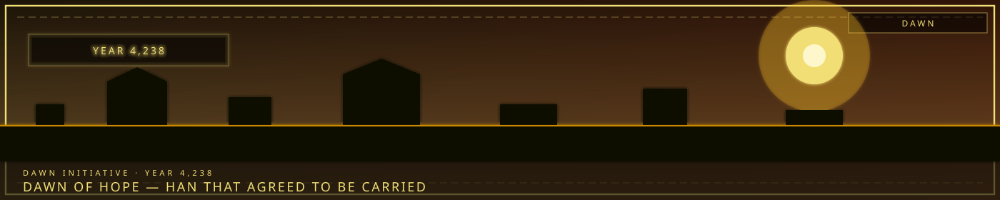

DawnHan that can be carried
/// RAPID JUMP:
STATUS: ARCHIVE VERIFIED |
CLEARANCE: LEVEL-4 OVERSIGHT |
PROTOCOL: REVERIE DIRECTORATE
ARTICLE
DISCUSSION
SOURCE
HISTORY
YEAR 4,238 · DAWN OF HOPE
LORE & WORLD RECORD
The Dawn of Hope & Reconstruction
Contents
- Year 4238 — The New Path
- Overview
- I. The Dawn Initiative (새벽 이니셔티브 — Saebyeok Inisieotibeu)
- II. The Lantern (등불 — Deungbul)
- III. The 12 Hope Bearers (희망의 인자 — Himang-ui Inja)
- IV. The Mission — Dawn Operations
- V. The Story — The Dawn Arcs
- VI. The Ending — The Dawn
- VII. The Game Structure
- VIII. The Timeline
- IX. What Comes Next
- X. PM Elements Not Yet Used
“Hope is not the opposite of Han. Hope is Han that agreed to be carried.”

Year 4238 — The New Path
"The old world ended with sorrow. The new world begins with hope. But hope is not free. Hope has a price. And someone has to pay it."
Overview
Year: 4238 (after the trilogy)
Setting: Somnarak — healed, but not cured. 15% Hope Entities. 85% Sorrow remains.
Company: The Dawn Initiative (새벽 이니셔티브 — Saebyeok Inisieotibeu)
Game Style: The Frontier Expedition Company — Journey / Character Stories
The three Corporations have completed their missions. The R.D. has activated the Absolvohan. The SED has mapped the unknown. The UCD has dismantled the underworld. The Hand of Hope has opened.
But the work is not done. 15% is not enough. The city still sorrows. The planet still grieves. The other cities still suffer.
The Dawn Initiative is born — a new company, a new mission, a new hope.
I. The Dawn Initiative (새벽 이니셔티브 — Saebyeok Inisieotibeu)
What It Is
The Dawn Initiative is a new Corporation — born from the ashes of the old, shaped by the lessons of the three operations, driven by the hope of the Hand of Hope.
Mission: Increase the 15% — transform more sorrow into hope, heal more of the city, reach the other cities, save the planet.
Location: Mobile — the Dawn Initiative operates from a vehicle called The Lantern (등불 — Deungbul) — a massive, mobile base that travels between zones, between cities, between worlds.
Cast: 12 Hope Bearers — citizens who carry Hope Entities within them, each one chosen for their unique sorrow, each one destined to transform it.
The Premise
The Hand of Hope transformed 15% of Somnarak's sorrow into Hope Entities. But 15% is not enough. The city still sorrows. The planet still grieves. The other cities — Cheonbulok and Mugeukji — are dying.
The Dawn Initiative is the answer — a new company that seeks to increase the transformation, to heal more of the city, to reach the other cities, to save the planet.
But hope is not free. Hope has a price. And the Hope Bearers will pay it.
II. The Lantern (등불 — Deungbul)
What It Is
The Lantern is the Dawn Initiative's mobile base — a massive vehicle that travels between zones, between cities, between worlds. The Lantern is not a building. The Lantern is a journey.
Appearance:
- A vehicle — massive, ancient, made of Han-crystal and Hope-crystal
- The Lantern glows — a warm, golden light that pushes back the darkness
- The Lantern moves — following Han-flow lines, seeking sorrow, spreading hope
- The Lantern is alive — the Hope Entities within it pulse with warmth
Structure:
- The Core — the Lantern's heart, where the Hope Bearers gather
- The Chambers — personal spaces for each Hope Bearer
- The Workshop — where M.A.W. is crafted and Hope-crystal is refined
- The Archive — where the journey's discoveries are recorded
- The Bridge — where the Lantern's captain navigates
The Captain
The Lantern is led by The Captain (선장 — Seonjang) — a former R.D. agent who survived the Absolvohan and now carries the weight of hope.
Name: Yeonhwa (연화) — the former Cartographer from SED
Origin: Yeonhwa was the SED's Cartographer — the one who mapped the unknown, who discovered the truth, who saw the Han-flow lines. After the Absolvohan, Yeonhwa was changed. The Han-flow lines she once saw with her Lens now glow with hope — golden threads that weave through the city's sorrow.
The Role: Yeonhwa navigates the Lantern — following the golden threads, seeking the places where sorrow is deepest, deploying the Hope Bearers to transform it.
The Sorrow: Yeonhwa carries the weight of knowledge — she knows the city's secrets, the Cheongula's truth, the Council's shame. She carries the hope — but she also carries the grief.
The Question: "If I lead the Dawn Initiative, am I saving the city — or am I just postponing the inevitable?"
III. The 12 Hope Bearers (희망의 인자 — Himang-ui Inja)
What They Are
The 12 Hope Bearers are citizens who carry Hope Entities within them — small, glowing, warm beings that were born from the Hand of Hope's transformation. Each Bearer was chosen for their unique sorrow — a sorrow that the Hope Entity can transform.
The Selection: The Hope Bearers were not chosen by the Dawn Initiative. They were chosen by the Hope Entities themselves — small, glowing beings that emerged from the city's 15% transformation and sought out citizens whose sorrow was deepest.
The Bond: Each Hope Bearer carries a Hope Entity within them — a small, warm presence that glows with golden light. The Entity does not control the Bearer. The Entity does not possess the Bearer. The Entity supports the Bearer — offering hope where there was none.
The Cost: The Hope Bearer carries both sorrow and hope — a weight that is heavier than either alone. The Bearer feels everything — the sorrow of the city, the hope of the transformation, the grief of the past, the promise of the future.
The 12 Hope Bearers
| # | Name | Codename | Sorrow | Hope Entity | Role |
|---|---|---|---|---|---|
| 1 | Yeonhwa (연화) | The Captain | Carries the weight of knowledge | The Guiding Light | Navigator |
| 2 | Taeho (태호) | The Commander | Lost a district to Fray control | The Shield of Dawn | Leader |
| 3 | Sooah (수아) | The Healer | Lost a child to Han | The Gentle Flame | Medic |
| 4 | Duri (두리) | The Collector | Twin consumed by Han | The Reuniting Spark | Scout |
| 5 | Sero (세로) | The Prince | Parents Fractured from unfairness | The Defiant Ember | Infiltrator |
| 6 | Sarang (사랑) | The Bride | Husband died naturally | The Eternal Warmth | Support |
| 7 | Midnight | The Watchman | Family consumed in Han overflow | The Silent Vigil | Guardian |
| 8 | Seol (설) | The Apprentice | Village crystallized by Han-storm | The Healing Touch | Mender |
| 9 | Hwaran (화란) | The Refugee | Left family in dying Cheonbulok | The Burning Hope | Fighter |
| 10 | Mori (모리) | The Doll Maker | Child Fractured | The Living Memory | Crafter |
| 11 | Bong (봉) | The Barkeeper | Wife Fractured behind his bar | The Shared Glass | Diplomat |
| 12 | Chunhwa (춘화) | The Widow | Husband Fractured from relief | The Standing Witness | Observer |
Character Profiles
1. Yeonhwa (연화) — The Captain
Codename: The Guiding Light
Sorrow: Carries the weight of knowledge — she knows the city's secrets, the Cheongula's truth, the Council's shame.
Hope Entity: The Guiding Light — a small, golden orb that pulses with warmth. The Light shows Yeonhwa the way — not through maps, but through hope. The Light reveals the places where sorrow is deepest, where hope is most needed.
Role: Navigator — Yeonhwa guides the Lantern, following the golden threads of hope through the city's sorrow.
2. Taeho (태호) — The Commander
Codename: The Shield of Dawn
Sorrow: Lost a district to Fray control — carries the guilt of not protecting his people.
Hope Entity: The Shield of Dawn — a small, golden shield that pulses with protective energy. The Shield absorbs damage — not just physical, but emotional. The Shield protects the Bearer from sorrow.
Role: Leader — Taeho commands the Hope Bearer team, making tactical decisions, protecting his people.
The Question: "If I protect everyone, who protects me from my own guilt?"
3. Sooah (수아) — The Healer
Codename: The Gentle Flame
Sorrow: Lost a child to Han — could not save them.
Hope Entity: The Gentle Flame — a small, golden flame that pulses with healing warmth. The Flame heals wounds — not just physical, but emotional. The Flame soothes sorrow.
Role: Medic — Sooah heals the team, both physically and emotionally.
The Question: "If I heal everyone else, will I ever heal myself?"
4. Duri (두리) — The Collector
Codename: The Reuniting Spark
Sorrow: Twin consumed by Han — searching for their sibling's Echo shard.
Hope Entity: The Reuniting Spark — a small, golden spark that pulses with connection. The Spark seeks lost things — memories, people, Echoes. The Spark reunites what was separated.
Role: Scout — Duri scouts ahead, seeking paths, finding lost things.
The Question: "If I find my twin's shard, will they come back?"
5. Sero (세로) — The Prince
Codename: The Defiant Ember
Sorrow: Parents Fractured from unfairness — became a Fray to survive.
Hope Entity: The Defiant Ember — a small, golden ember that pulses with defiance. The Ember refuses to accept injustice. The Ember fights back.
Role: Infiltrator — Sero infiltrates enemy territory, gathering intelligence, causing chaos.
The Question: "If the city took everything from me, why shouldn't I take everything from the city?"
6. Sarang (사랑) — The Bride
Codename: The Eternal Warmth
Sorrow: Husband died naturally — wears his memories in a pendant.
Hope Entity: The Eternal Warmth — a small, golden warmth that pulses with love. The Warmth comforts the grieving. The Warmth reminds the lost that they were loved.
Role: Support — Sarang supports the team emotionally, offering comfort, sharing warmth.
The Question: "If I wear his memories, do I lose my own?"
7. Midnight — The Watchman
Codename: The Silent Vigil
Sorrow: Family consumed in Han overflow — patrols Zone B every night.
Hope Entity: The Silent Vigil — a small, golden light that pulses with watchfulness. The Vigil watches over the team. The Vigil protects while they sleep.
Role: Guardian — Midnight guards the team, watching while they rest.
The Question: "If I walk the same path forever, will I find them?"
8. Seol (설) — The Apprentice
Codename: The Healing Touch
Sorrow: Village crystallized by Han-storm — became a Mender to prevent it from happening again.
Hope Entity: The Healing Touch — a small, golden hand that pulses with repair. The Touch mends what is broken — structures, Veils, hearts.
Role: Mender — Seol repairs damage, maintains equipment, heals wounds.
The Question: "If I repair the Veil, am I saving people — or trapping them?"
9. Hwaran (화란) — The Refugee
Codename: The Burning Hope
Sorrow: Left family in dying Cheonbulok — came to Somnarak seeking help.
Hope Entity: The Burning Hope — a small, golden flame that pulses with fury. The Hope burns — not with rage, but with determination. The Hope refuses to give up.
Role: Fighter — Hwaran fights the team's enemies, burning through obstacles.
The Question: "If I left them to die, am I a survivor — or a coward?"
10. Mori (모리) — The Doll Maker
Codename: The Living Memory
Sorrow: Child Fractured — makes Han-crystal dolls of the lost.
Hope Entity: The Living Memory — a small, golden figure that pulses with remembrance. The Memory preserves what was lost. The Memory keeps the dead alive.
Role: Crafter — Mori crafts equipment, creates tools, builds things from hope.
The Question: "If I make them perfect, will they come back?"
11. Bong (봉) — The Barkeeper
Codename: The Shared Glass
Sorrow: Wife Fractured behind his bar — serves everyone, judges no one.
Hope Entity: The Shared Glass — a small, golden cup that pulses with sharing. The Glass shares sorrow — dividing it, making it bearable. The Glass shares hope — multiplying it, making it stronger.
Role: Diplomat — Bong negotiates with allies and enemies, sharing drinks and stories.
The Question: "If I serve everyone's sorrow in a glass, who serves mine?"
12. Chunhwa (춘화) — The Widow
Codename: The Standing Witness
Sorrow: Husband Fractured from relief — stands outside Collector's Row every day.
Hope Entity: The Standing Witness — a small, golden figure that pulses with witnessing. The Witness sees everything. The Witness remembers everything. The Witness testifies.
Role: Observer — Chunhwa witnesses the team's actions, recording them, remembering them.
The Question: "If the debt is supposed to end, why does it never stop?"
IV. The Mission — Dawn Operations
What They Do
The Dawn Initiative operates from the Lantern — traveling between zones, between cities, between worlds. The Hope Bearers deploy to areas where sorrow is deepest — transforming it, healing it, spreading hope.
Dawn Operations:
- Locate — Find areas of concentrated sorrow
- Deploy — Send Hope Bearers to the area
- Transform — Hope Bearers use their Hope Entities to transform sorrow
- Harvest — Collect Hope-crystal from the transformation
- Return — Return to the Lantern, prepare for next operation
The Operations
| Operation | Location | Target | Hope Bearer |
|---|---|---|---|
| Dawn 1 | Zone B — The Raw | The debt system's sorrow | Chunhwa (The Widow) |
| Dawn 2 | Zone C — Collector's Row | The Collector's guilt | Bong (The Barkeeper) |
| Dawn 3 | Zone D — Echo Gardens | The artist's exhaustion | Mori (The Doll Maker) |
| Dawn 4 | Zone E — The Border | The Warden's duty | Midnight (The Watchman) |
| Dawn 5 | The Desolate | The nomad's wandering | Yeonhwa (The Captain) |
| Dawn 6 | Cheonbulok | The Furnace's cracking | Hwaran (The Refugee) |
| Dawn 7 | Mugeukji | The Void's leaking | Seol (The Apprentice) |
| Dawn 8 | The Weeping | The source of all sorrow | All 12 Hope Bearers |
V. The Story — The Dawn Arcs
Arc 1: The Debt Widow's Stand (빚의 과부의 저항)
Location: Zone C — Collector's Row
Hope Bearer: Chunhwa (The Widow)
Target: The debt system's sorrow — the weight of obligation
The Mission: Chunhwa returns to Collector's Row — the place where her husband Fractured. The Hope Bearers deploy to transform the district's sorrow — the weight of debt, the fear of collection, the grief of losing everything.
The Discovery: The debt system is not just economic — it is emotional. The Collectors do not just collect Echoes. They collect sorrow. The debt system is a machine that harvests grief — feeding the Weeping, feeding the city, feeding the cycle.
The Choice: Chunhwa can transform the debt system's sorrow — but doing so would erase the debts. Every citizen would be free. But freedom without structure is chaos. The team must decide: transform the sorrow, or preserve the system?
Arc 2: The Barkeeper's Last Round (술집 주인의 마지막 잔)
Location: Zone D — Echo Gardens
Hope Bearer: Bong (The Barkeeper)
Target: The artist's exhaustion — the weight of creation
The Mission: Bong returns to the Echo Gardens — the place where artists create, perform, and burn out. The Hope Bearers deploy to transform the district's sorrow — the weight of creativity, the exhaustion of expression, the grief of giving everything.
The Discovery: The Echo Gardens are not just an art district — they are a sorrow factory. The artists create beauty from pain — but the pain is real. Every song, every painting, every dance costs something. The Gardens are beautiful — but they are built on exhaustion.
The Choice: Bong can transform the artist's sorrow — but doing so would remove the pain that creates the art. The beauty would fade. The songs would stop. The team must decide: transform the sorrow, or preserve the art?
Arc 3: The Doll Maker's Workshop (인형 제작자의 공방)
Location: Zone D — The Forge District
Hope Bearer: Mori (The Doll Maker)
Target: The Fractured's memory — the weight of loss
The Mission: Mori returns to the Forge District — the place where she crafts Han-crystal dolls of the Fractured. The Hope Bearers deploy to transform the district's sorrow — the weight of memory, the grief of loss, the pain of remembering.
The Discovery: The Forge District is not just a crafting district — it is a memorial. Every building, every street, every corner is dedicated to someone who Fractured. The district is beautiful — but it is built on grief.
The Choice: Mori can transform the Fractured's sorrow — but doing so would erase the memories. The dolls would dissolve. The memorials would fade. The team must decide: transform the sorrow, or preserve the memory?
Arc 4: The Watchman's Vigil (야간 경비원의 경야)
Location: Zone B — The Old Lament
Hope Bearer: Midnight (The Watchman)
Target: The Wardens' duty — the weight of protection
The Mission: Midnight returns to Zone B — the place where his family was consumed. The Hope Bearers deploy to transform the district's sorrow — the weight of duty, the grief of loss, the pain of protecting what cannot be saved.
The Discovery: Zone B is not just a residential district — it is a graveyard. Every building is a memorial. Every street is a funeral procession. The district is alive — but it is built on death.
The Choice: Midnight can transform the Wardens' sorrow — but doing so would remove the duty that drives them. The protection would fade. The vigil would end. The team must decide: transform the sorrow, or preserve the duty?
Arc 5: The Captain's Map (선장의 지도)
Location: The Desolate
Hope Bearer: Yeonhwa (The Captain)
Target: The nomad's wandering — the weight of rootlessness
The Mission: Yeonhwa returns to the Desolate — the place where she once mapped the unknown. The Hope Bearers deploy to transform the Desolate's sorrow — the weight of wandering, the grief of belonging nowhere, the pain of being between.
The Discovery: The Desolate is not just a buffer zone — it is a bridge. The Desolate connects Somnarak to the other cities — to Cheonbulok, to Mugeukji, to the wilderness. The Desolate is the planet's emotional highway — carrying sorrow from one place to another.
The Choice: Yeonhwa can transform the Desolate's sorrow — but doing so would sever the connection between the cities. The bridge would collapse. The cities would be isolated. The team must decide: transform the sorrow, or preserve the connection?
Arc 6: The Refugee's Return (피난민의 귀환)
Location: Cheonbulok — The City of a Thousand Rages
Hope Bearer: Hwaran (The Refugee)
Target: The Furnace's cracking — the weight of rage
The Mission: Hwaran returns to Cheonbulok — the city she fled, the family she left behind. The Hope Bearers deploy to transform the city's sorrow — the weight of rage, the grief of burning, the pain of fury.
The Discovery: Cheonbulok is not just a city of rage — it is a prison. The citizens are addicted to fury — unable to feel anything else. The Furnace is cracking — and when it breaks, the rage will consume everything.
The Choice: Hwaran can transform Cheonbulok's sorrow — but doing so would extinguish the Furnace. The city would lose its power. The citizens would lose their identity. The team must decide: transform the sorrow, or preserve the rage?
Arc 7: The Apprentice's Repair (견습생의 수리)
Location: Mugeukji — The City of Absolute Silence
Hope Bearer: Seol (The Apprentice)
Target: The Void's leaking — the weight of silence
The Mission: Seol enters Mugeukji — the city of silence, the city of emptiness. The Hope Bearers deploy to transform the city's sorrow — the weight of silence, the grief of emptiness, the pain of not feeling.
The Discovery: Mugeukji is not just a silent city — it is a bomb. The Storage Vaults contain 5,800 years of suppressed emotion. If the Vaults break, the emotional wave will destroy everything within 1,000 kilometers.
The Choice: Seol can transform Mugeukji's sorrow — but doing so would open the Vaults. The emotions would flood out — joy, sorrow, rage, love, fear, hope. The city would feel everything — all at once. The team must decide: transform the sorrow, or preserve the silence?
Arc 8: The Hand of Hope (희망의 손)
Location: The Weeping — beneath the Alpha Tree
Hope Bearer: All 12 Hope Bearers
Target: The source of all sorrow — the weight of the planet
The Mission: The Dawn Initiative descends to the Weeping — the river of liquid Han that flows beneath the city. The Hope Bearers deploy to transform the Weeping's sorrow — the weight of the planet, the grief of 6,000 years, the pain of existence.
The Discovery: The Weeping is not just a river — it is the planet's heart. The Weeping carries the sorrow of every person who has ever lived — on Mugenhan, in Somnarak, in Cheonbulok, in Mugeukji. The Weeping is the source. The Weeping is the wound. The Weeping is the key.
The Choice: The 12 Hope Bearers can transform the Weeping — but doing so would change the planet. The sorrow would not disappear. The sorrow would transform — from grief to hope, from weight to light, from darkness to dawn.
The 15% would become 100%.
The city would be healed.
The planet would be saved.
But the sorrow would not disappear. The sorrow would transform. And transformation is not the same as erasure.
The Hope Bearers choose. The Hand of Hope opens. The dawn breaks.
VI. The Ending — The Dawn
The 12 Hope Bearers stand in the Weeping — surrounded by liquid sorrow, bathed in golden light. Their Hope Entities pulse — warm, bright, alive.
The Weeping rises — not as a flood, but as a bloom. The liquid sorrow transforms — from blue to gold, from cold to warm, from grief to hope.
The city feels it. The citizens feel it. The planet feels it.
The 15% becomes 45%.
Not 100%. Not complete healing. Not a cure.
Han is Primordial — it has existed since the planet was born. It cannot be erased. It cannot be fully transformed. It can only be balanced.
The sorrow does not disappear. The sorrow transforms — partially. The grief becomes gratitude — partially. The weight becomes light — partially.
45% of the city's sorrow is now hope. 55% remains — heavy, constant, real. The planet is not saved. The planet is healed. A little. Enough.
The city still sorrows. The city still grieves. The city still weeps.
But the city also hopes. And 45% is more than 15%.
The Dawn Initiative has completed its mission — but the mission is not over. 45% is not enough. The other cities still suffer. The planet still grieves. The Han still flows.
The Dawn breaks — but the night is not over.
The story continues...
VII. The Game Structure
How It Plays
Phase 1: The Lantern
- Player manages the Lantern — the mobile base
- Assigns Hope Bearers to operations
- Crafts equipment, refines Hope-crystal
Phase 2: Dawn Operations
- Player deploys Hope Bearers to areas of concentrated sorrow
- Each operation is a character-focused story arc
- Choices affect the outcome — transform or preserve?
Phase 3: The Descent
- Player descends to the Weeping
- All 12 Hope Bearers work together
- The final transformation
The Cast — Unified
| Character | Codename | Role | From |
|---|---|---|---|
| Yeonhwa | The Captain | Navigator | SED |
| Taeho | The Commander | Leader | UCD |
| Sooah | The Healer | Medic | New |
| Duri | The Collector | Scout | New |
| Sero | The Prince | Infiltrator | New |
| Sarang | The Bride | Support | New |
| Midnight | The Watchman | Guardian | New |
| Seol | The Apprentice | Mender | New |
| Hwaran | The Refugee | Fighter | New |
| Mori | The Doll Maker | Crafter | New |
| Bong | The Barkeeper | Diplomat | New |
| Chunhwa | The Widow | Observer | New |
VIII. The Timeline
| Year | Event |
|---|---|
| 4232 | The Cycle begins — R.D. established |
| 4232+1778 | The Absolvohan activates — Hand of Hope opens |
| 4238 | The Dawn Initiative founded — The Lantern built |
| 4239 | Dawn Operations begin — 8 missions |
| 4246 | The Descent — all 12 Hope Bearers enter the Weeping |
| 4247 | The Dawn — 15% becomes 45% |
| 4248+ | The story continues — more companies, more missions |
— Captain Yeonhwa, Dawn Initiative, Year 4238
IX. What Comes Next
The Dawn Initiative achieved 45%. But 45% is not enough.
The other cities still suffer. Cheonbulok's Furnace still cracks. Mugeukji's Void still leaks. The Desolate still grows. The Han still flows.
More companies will rise. More missions will be undertaken. More sorrow will be transformed.
The story continues...
X. PM Elements Not Yet Used
| PM Game | Element | Status | Potential |
|---|---|---|---|
| LoR | Reception Battles | ❌ Not used | Character-focused combat encounters |
| LoR | Floor Realizations | ❌ Not used | Deep character exploration through combat |
| LoR | Key Pages | ❌ Not used | Character progression through battle |
| LoR | The Library | ❌ Not used | A location that consumes and preserves |
| LoR | Urban Threat Levels | ❌ Not used | District danger ratings |
| The Frontier Expedition | Identity System | ❌ Not used | What-if character variants |
| The Frontier Expedition | Mirror Dungeons | ❌ Not used | Roguelike exploration mode |
| The Frontier Expedition | Skill Coins | ❌ Not used | Coin flip combat mechanic |
| The Frontier Expedition | Bus Mechanic | ❌ Not used | Travel between locations (partially in Lantern) |
| LC | Memory Repository | ❌ Not used | Reset/save system |
These elements can be used for future companies.
CANONICAL CROSS-LINKS & ATLAS CONNECTIONS